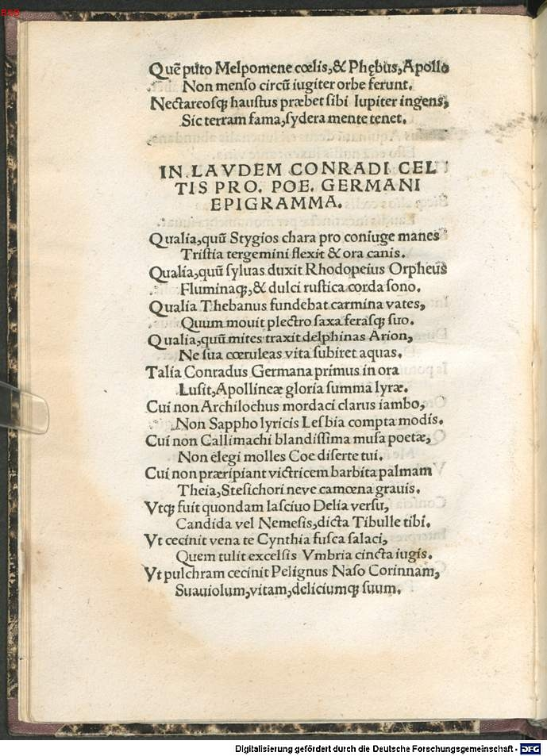
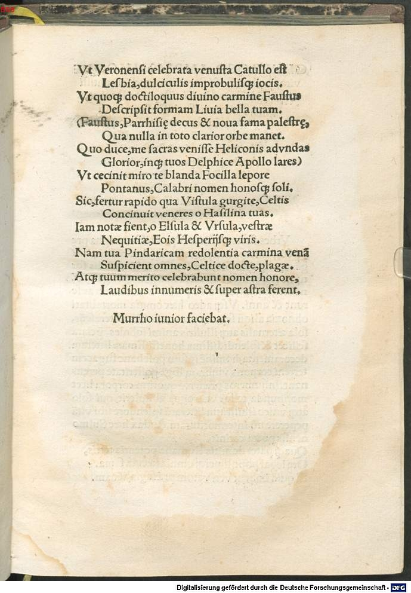

Celtis 10 (Sebastian Murrho der Jüngere)
Faksimile


Transkription
In laudem Conradi Celtis Protucii Poetae Germani epigramma
Qualia, cum Stygios cara pro coniuge manes
Tristia tergemini flexit et ora canis.
Qualia, cum silvas duxit Rhodopeius Orpheus
Fluminaque, et dulci rustica corda sono.
Qualia Thebanus fundebat carmina vates,
Cum movit plectro saxa ferasque suo.
Qualia, cum mites traxit deplhinas Arion,
Ne sua caeruleas vita subiret aquas.
Talia Conradus Germana primus in ora
Lusit, Apollineae gloria summa lyrae.
Cui non Archilochus mordaci clarus iambo,
Non Sappho lyricis Lesbia compta modis.
Cui non Callimachi blandissima musa poetae,
Non elegi molles Coe diserte tui.
Cui non praeripiant victricem barbita palmam
Theia, Stesichori neve camena gravis.
Utque fuit quondam lascivo Delia versu,
Candida vel Nemesis, dicta Tibulle tibi.
Ut cecinit vena te Cynthia fusca salaci,
Quem tulit excelsis Umbria cincta iugis.
Ut pulchram cecinit Paelignus Naso Corinnam,
Suaviolum, vitam, deliciumque suum.
Ut Veronensi celebrata venusta Catullo est
Lesbia, dulciculis improbulisque iocis.
Ut quoque doctiloquus divino carmine Faustus
Descripsit formam Livia bella tuam.
(Faustus, Parrhisiae decus et nova fama palaestrae,
Qua nulla in toto clarior orbe manet.
Quo duce, me sacras venisse Heliconis ad undas
Glorior, inque tuos Delphice Apollo lares)
Ut cecinit miro te blanda Focilla lepore
Pontanus, Calabri nomen honosque soli.
Sic, fertur rapido qua Vistula gurgite, Celtis
Concinuit veneres o Hasilina tuas.
Iam notae fient, o Elsula et Ursula, vestrae
Nequitiae, Eois Hesperiisque viris.
Nam tua Pindaricam redolentia carmina venam
Suspicient omnes, Celtice docte, plagae.
Atque tuum merito celebrabunt nomen honore,
Laudibus innumeris et super astra ferent.
Murro iunior faciebat.Übersetzung
Epigramm auf das Lob auf Konrad Celtis Protucius, den deutschen Dichter
Was <er spielte>, als er die stygischen Seelen und die finsteren Mienen des dreigestaltigen Hundes für die liebe Gattin erweichte. Was <der rhodopische Orpheus spielte>, als er die Wälder, die Flüsse und die ländlichen Saiten mit süßem Klang führte. Welche Lieder der thebanische Sänger von sich gab, als er mit seinem Plektron Felsen und wilde Tiere bewegte. Was Arion <spielte>, als er zahme Delphine an sich zog, damit sein Leben nicht in den blauen Fluten untergeht. Solches spielte Konrad als erster an der deutschen Küste mit höchstem Ruhm der Lyra Apolls. Diesem dürften nicht Archilochos, berühmt durch seinen beißenden Iambos, nicht die Lesbierin Sappho, geschmückt mit lyrischen Metren; diesem dürften nicht die überaus liebreizende Muse des Dichters Kallimachos noch deine sanften Elegien, du redegewandter Koer; diesem dürften nicht Lyraklänge aus Teos noch die gewichtige Muse des Stesichoros die Siegespalme entreißen. Und wie einst Delia oder die strahlend weiße Nemesis von dir im zügellosen Vers genannt wurde, Tibull. Wie die dunkle Cynthia dich besungen hat mit geiler Ader, den das mit aufragenden Bergrücken umgebene Umbrien trug. Wie der pälignische Naso die schöne Corinna besang, den Kuss, das Leben und seinen Liebling. Wie die liebliche Lesbia vom Veronenser Catull gepriesen wurde mit süßen und unanständigen Späßchen. Wie auch der gelehrt sprechende Faustus mit göttlichem Lied deine Gestalt beschrieb, schöne Livia. (Faustus, die Zier und der neue Ruhm der parrhasischen Ringschule, der berühmteste, der auf der ganzen Welt fortbesteht. Unter seiner Führung rühme ich mich, zu den heiligen Gewässern des Helikon und zu deinen Laren gekommen zu sein, delphischer Apoll.) Wie Pontano, der Name und die Ehre des kalabrischen Bodens, dich, reizende Focilla mit wundersamer Anmut, besang. So, o Hasilina, hat Celtis die Liebe zu dir dort erklingen lassen, wo die Weichsel mit reißender Strömung dahinfließt. Schon werden eure Nichtsnutzigkeit Männern Ost und West bekannt sein, Elsula und Ursula. Denn alle Gegenden werden deine Lieder erblicken, die nach der pindarischen Ader riechen, gelehrter Celtis. Und deinen Namen werden sie mit der verdienten Ehre und unzähligen Lobgesängen rühmen und über die Sterne hinaustragen.
Murrho der Jüngere hat <es> gemacht.Metadaten
| Titel des Gedichts: | In laudem Conradi Celtis Protucii Poetae Germani epigramma |
| Autor der Gedichts: | Sebastian Murrho der Jüngere (Murrho iunior) |
| Containerwerk: | Conradi Celtis Protucii, primi in Germania poetae coronati, libri Odarum quattuor, cum Epodo, et saeculari carmine diligenter et accurate impressi, et hoc primum typo in studiosorum emolumentum editi, Straßburg 1513 |
| Autor des Containerwerks: | Konrad Celtis (Conradus Celtis) |
| Gattung des Containerwerks: | Lyrik, Oden, Epoden, Carmen saeculare |
| Erscheinungsjahr: | 1513 |
| Verschlagwortung: | Poetologie, Dichtung, Orpheus, aemulatio, Archilochos, Sappho, Kallimachos, Philetas von Kos, Stesichoros, Tibull, Ovid, Catull, Fausto, Pontano, domina, Geliebte, Elegie, Wettstreit, Berühmtheit, Nachruhm |